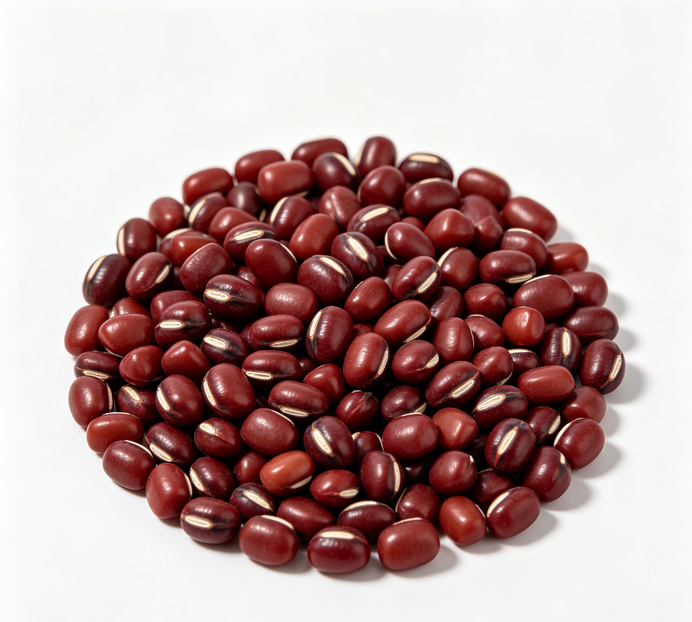

📋 基本信息
中文名赤小豆
拉丁名Vigna umbellata Ohwi
英文名Rice Bean
产地科：豆科（Fabaceae/Leguminosae）；属：豇豆属（Vigna）；拉丁学名：Vigna umbellata Ohwi et Ohashi 或 Vigna angularis Ohwi et Ohashi。赤小豆主产于云南、广西、广东、江西等地；赤豆全国各地广泛栽培，主产于吉林、黑龙江、辽宁等东北地区及华北、华东等地。
性状赤小豆 呈长圆形而稍扁，长5～8mm，直径3～5mm。表面紫红色，无光泽或微有光泽；一侧有线形突起的种脐，偏向一端，白色，约为全长2/3，中间凹陷成纵沟；另侧有1条不明显的棱脊。质硬，不易破碎。子叶2，乳白色。气微，味微甘。赤豆 呈短圆柱形，两端较平截或钝圆，直径4～6mm。表面暗棕红色，有光泽，种脐不突起。【来源：《中国药典》2020年版一部】
用法用量9～30g。外用适量，研末调敷。【来源：《中国药典》2020年版一部】
贮藏置干燥处，防蛀。【来源：《中国药典》2020年版一部】
☯ 传统属性
四气平
五味甘、酸
归经心、小肠经
功能主治利水消肿，解毒排脓。用于水肿胀满，脚气浮肿，黄疸尿赤，风湿热痹，痈肿疮毒，肠痈腹痛。【来源：《中国药典》2020年版一部】
禁忌症2020年版《中国药典》未单列注意事项。本草文献载本品性善下行利水，久服令人枯瘦（陶弘景），阴虚津伤者不宜久服、多服；且不可与半红半黑之相思子（有剧毒）混淆。【来源：《中华本草》等本草文献整理】
毒性常规食用安全；过量可致腹胀、肠鸣等胃肠不适；本草载其性下行，“久服令人枯瘦”，故不宜长期大量单独食用；误食外形相似而有剧毒的相思子可致中毒，须注意鉴别。
适宜体质气虚质、平和质、湿热质、阴虚质
适宜证型气虚证、脾胃气虚证、热证、湿热证
🔬 现代研究
主要成分含糖类及三萜皂苷类成分；每100g含蛋白质20.7g、脂肪0.5g、碳水化合物58g、粗纤维4.9g、灰分3.3g、钙67mg、磷305mg、铁5.2mg、硫胺素0.31mg、核黄素0.11mg、烟酸2.7mg等。同基原赤豆中分离得赤豆皂苷Ⅰ～Ⅵ等齐墩果烯型皂苷、右旋儿茶素-7-O-β-D-吡喃葡萄糖苷、D-儿茶素、表儿茶素等，另含胰蛋白酶抑制剂及较丰富的膳食纤维、叶酸。【来源：《中华本草》及公开科研文献整理】
药理作用公开研究报道本品具有利尿、抗氧化、抗炎、抗菌、调节血脂、增强免疫及雌激素样作用等；所含皂角甙可刺激肠道蠕动、促进利尿；膳食纤维有助于润肠通便、调节血糖血脂。自赤小豆中分离的胰蛋白酶抑制剂（相对分子质量约7000，由54个氨基酸残基组成）对胰蛋白酶有较强的不可逆竞争性抑制作用。临床有用于急性肾炎水肿、肝硬化腹水、腮腺炎等辅助治疗的报道。【来源：《中华本草》及公开科研文献综述整理】
食疗功效利水渗湿、健脾止泻、解毒消肿，兼能通乳。传统用于水肿、脚气、黄疸、泄泻及产后缺乳的食疗，如赤小豆粥、赤小豆冬瓜汤等，是经典祛湿类食药物质。
食养禁忌
🏭 产品形态与潜在功能
推荐形态
粉末丸剂干果
潜在功能